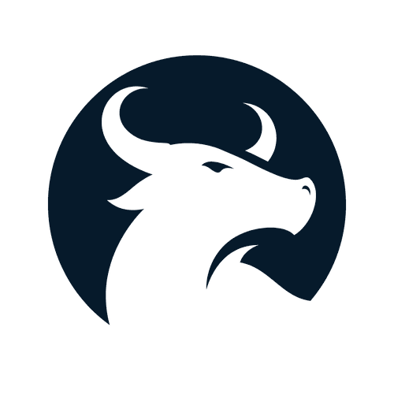

FEN Investment Group
Torneo Portafolio 2026
Organización estudiantil de la Facultad de Economía y Negocios
En alianza con

Resultados de la semana
Torneo Portafolio 2026
Torneo Portafolio 2026
Ranking Top 5
@fen.investment.group